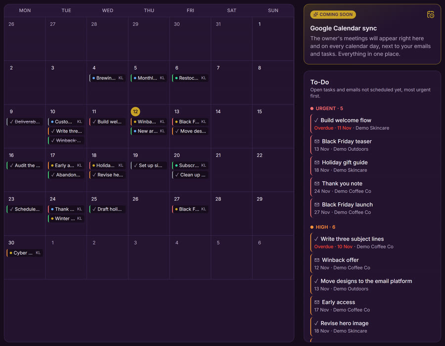
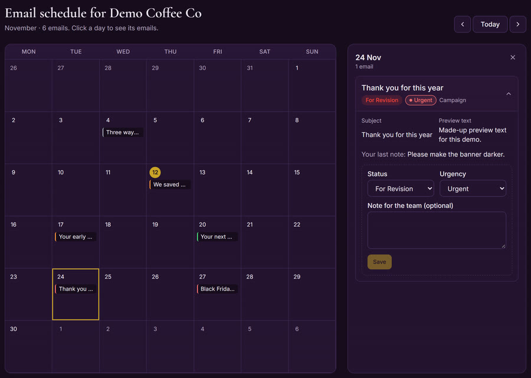
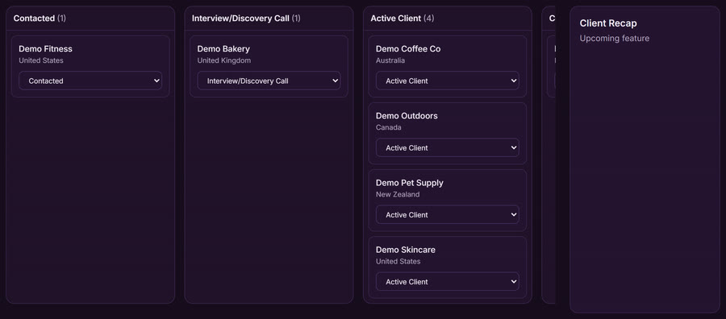
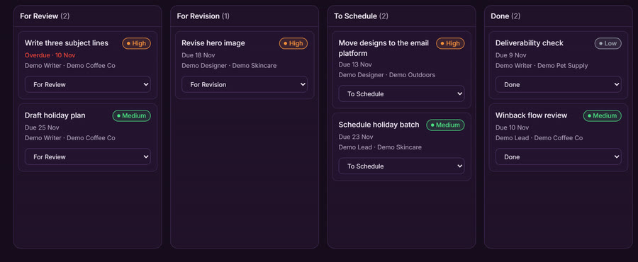
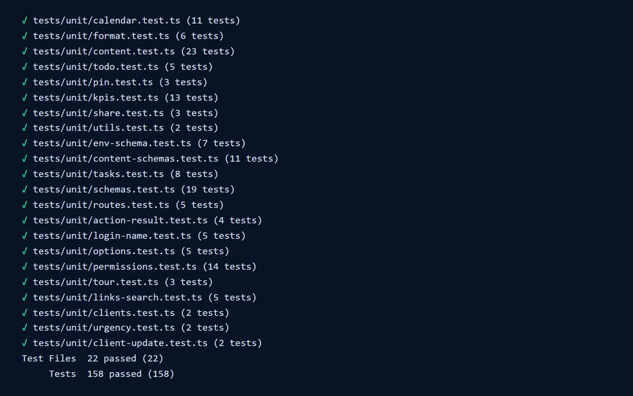
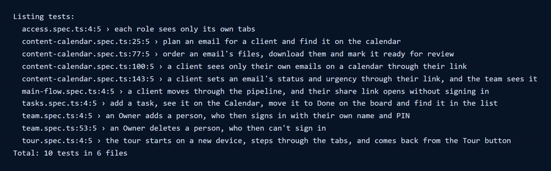

Case study: a custom CRM for an email marketing agency
An email agency CRM with a client view
An email marketing agency with international clients needed one place for its pipeline, its send calendar and its team's to-dos, plus a way for clients to see their own emails without an account. I took a CRM I had written from scratch, gave the agency its own copy, and reshaped it around email work.
- team accounts
- 9
- automated tests
- 222
- days from copy to go-live
- 2
- Email added to the calendarSubject, preview text, send date and designs
- Client opens their private linkNo sign-in, no tabs, only their own emails
- Client's update reaches the teamNew status, urgency and a note, logged on the timeline
The screens
These are the real pages running on my machine with made-up demo data and a placeholder brand. The live CRM holds the agency's client records, so I didn't capture it.




The brief
The agency runs email marketing for international clients. Its team needed to track clients, plan sends and share to-dos in one place, and its clients needed a simple way to see what was going out. The list kept growing after go-live, as the team started using it.
-
One pipeline, two views
Leads and deals became one list of clients, moving from New Lead to Completed/Repeat Client, or Lost. Kanban is the default, with a list view beside it.
-
A calendar for email, not social
Each email carries a subject, preview text, platform, send date and designs, with four statuses: In Progress, Ready for Review, For Revision and Scheduled.
-
A client view without accounts
Each client gets a private link to their own email calendar. They see only their emails, never notes, assignees, tasks or other clients.
-
Access by role
There are three roles. Only the Owner opens Dashboard, Clients and Team. Everyone else works in Contacts, Calendar and Tasks.
-
Money in two currencies
Client fees are in US dollars and expenses in pesos. The Owner sets the exchange rate, and peso figures stay hidden until they do, because I won't let the app guess a rate.
-
Sign-in people remember
Everyone signs in with their name and a short PIN. No email is ever sent, and the Owner can reset a PIN on the Team page.
How I built it
Six steps. The agency's copy went live on its second day, and 42 commits landed on it in the first four days.
-
Start from a CRM I wrote from scratch
I had already built a CRM with name and PIN sign-in, a team page, contacts and a content calendar. The agency got a separate copy with its own database and hosting, so the two share nothing.
Claude Code, Next.js, React, TypeScript, Tailwind CSS, Supabase, Vercel
-
Replace leads and deals with one pipeline
A migration moved everything onto one client record and dropped the two old tables. Every stage change is logged on that client's timeline, and the board and list both read from the same record.
Postgres migrations, drag and drop board
-
Rebuild the calendar for email
The calendar I started from was built for social posts. I changed it to email sends: subject, preview text, platforms such as Klaviyo, Mailchimp and HubSpot, email types, and up to 10 files per email.
-
Give each client a private link
A link is a long random token tied to one client. The database functions behind it return only client-safe fields, so notes and assignees never leave the database, and turning a link off stops it at once. When a client changes a status or urgency, or leaves a note, it lands on that client's timeline.
Postgres security definer functions
-
Enforce access in the database, not just the menu
Row level security and a database trigger back up what the menu shows. A Team Leader who tries to change someone's role gets nothing, even when calling the database directly, and a test checks exactly that. The last active Owner can't be demoted or switched off.
Supabase row level security, Vitest
-
Keep shipping what the team asks for
Once people were using it, requests came in as short messages: a Tasks tab, urgency colours, six task stages, a To-Do list beside the calendar, deleting team members, and a tour on first sign-in. I have no direct connection to the database, so each change goes out as a SQL file I run by hand, and the bigger ones get a dry run first.
Claude Code, PGlite for dry runs, Playwright
What went wrong and what fixed it
These are real failures from this build. Some got caught early, and some reached the live site first.
-
A client link that looked empty
One client's link showed almost nothing. The link was fine: the team had entered 14 tasks for that client and only one email, and links showed emails only. I added tasks to the link, then realised that was wrong, because clients should only ever see emails. I rolled it back, removed the database function so tasks couldn't be fetched directly, and put a note on the task form.
-
Short PINs the database refused
The team already used short PINs, and Supabase rejected them with a weak password error, because its minimum is 6 characters. The server now turns each PIN into a long password using a keyed hash and a secret that stays on the server.
-
A migration that couldn't run
Dropping the old deals table failed in my dry run, because leads and deals reference each other. Nothing had touched a real database yet. Dropping both tables in one statement fixed it.
-
A test that opened a dead link
The client update test failed with "This link isn't active". The app was fine. The test clicked New link and read the box before the new link arrived, so it opened the old one just as it was cancelled. It now waits for the value to change.
-
Test data in front of the real team
There's one database, so browser tests run against live data. A test client disappeared mid-run, most likely deleted by someone on the team, and a run I cut off left a test client and 4 test emails behind. I removed them, and I now run these tests rarely and in the background.
-
A change that broke the live site for a moment
One database change removed a column the live site was still reading, so pages would show errors until the new code went out. I deployed straight after it. Where I can, I now make changes that only add, so order doesn't matter.
Results and limits
The CRM is live and the agency's team has real work in it. I have no measured business results yet: no time saved, no revenue effect and no client feedback I can quote. Here is what I can show.
What it delivered
- A live CRM with 6 tabs, 3 roles and 9 team accounts.
- 11 clients in the pipeline and 25 tasks on the board when I first checked, all 25 added within one day.
- A private calendar link per client, with status, urgency and notes flowing back to the team.
- 222 automated tests: 158 unit, 54 database access and 10 browser.
What it can't do yet
- Google Calendar sync and Client Recap are placeholders with no function.
- Pages are slower than they should be. The server code runs in Washington and the database in Sydney, so responses took about 0.7 to 1.6 seconds to start, and a first request after a quiet spell took 4.5. The fix is a one-line setting I haven't applied yet.
- Emails and tasks look alike on the calendar, which may be part of why client work got entered as tasks. A clearer legend is still only an idea.
- Browser tests still share the live database. A separate test database is on the list.
- Short PINs are easy to remember, but they're weaker than real passwords.
The biggest miss wasn't a bug. I changed the client link before asking what a client should see.
Under the hood


Need a CRM that fits how your team works?
I build custom CRMs and internal tools, and I'll tell you what they can't do yet. Book a free 30-minute call, or send me an email.
- raffymcfee@gmail.com
- Location
- Pampanga, Philippines